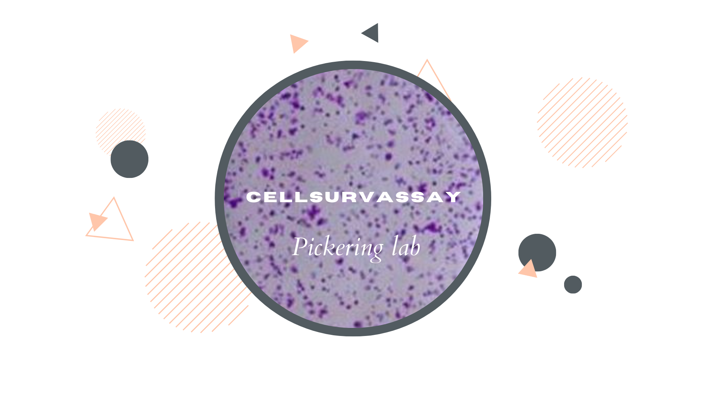
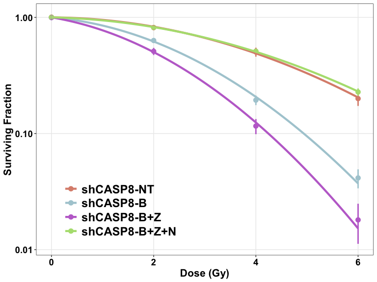

CellSurvAssay consists of a couple of tools that can be used to perform Clonogenic Survival Analysis in R very easily and efficiently. These two tools are:
CellSurvAssay R package: This helps even beginner R users to perform the analysis in R, while maintaining the flexibility of a package.
CellSurvAssay Shiny app: This is a web application that helps users with no experience in R to perform the analysis, in R. The app is based on the CellSurvAssay R package and can be accessed here.
Purpose of the CellSurvAssay R package
- This R package has been written around CFAssay, another R package that can be used to perform Cell Survival Assay analysis in R. However, CellSurvAssay has it’s own purposes and advantages:
- it makes performing Clonogenic Survival Analysis in R incredibly user-friendly and efficient, even for beginner R users who don’t have the luxury of time to dig deeper into R,
- it arranges all the commonly used steps of clonogenic assay analysis in one location and automates the data wrangling steps to the extent that only single lines of code suffice for each step of the analysis,
- it utilizes
ggplot()to plot the cell survival curves, and builds better quality figures than other available R packages, - it is less time consuming and more convenient for the user, as it accepts the raw data for the analysis and calculates the plating efficiencies by itself, unlike many automated software commonly used,
- it offers various method options for parameter estimation and calculating plating efficiencies, unlike most other available software tools, and
- as R is being utilized, the methodology stays open and the results reproducible.
Below is just a quick workflow that can be used to perform Clonogenic Survival Analysis using this package. For more details on the functions, different method options for parameter estimation and calculation of plating efficiency, and customization of the figures, please refer to the package vignette.
Installing the package
- The package is being shared through GitHub. Running the following set of codes installs and loads the package in R memory:
# if installing from Bioconductor
# install BiocManager, if required
if (!require("BiocManager", quietly = TRUE))
install.packages("BiocManager")
# install CellSurvAssay
BiocManager::install("CellSurvAssay")
# load CellSurvAssay in R
library(CellSurvAssay)
# if installing from GitHub
# install devtools, if required
if(!require(devtools)) {
install.packages("devtools")
library(devtools)
}
# install CellSurvAssay
install_github("arunangshu-github/CellSurvAssay",
build_vignettes = TRUE,
dependencies = TRUE)
# load CellSurvAssay in R memory
library(CellSurvAssay) - This vignette can be accessed from R using the following command:
browseVignettes("CellSurvAssay")Importing the data set
- The function
importData()helps import the data set.
datatab <- importData("path/to/file", "type of file")- The package contains a data set that can be used to get familiar with the package. It can be imported in the R environment as below:
datatab <- CellSurvAssay::CASP8_dataFitting the Linear Quadratic Model
- The
lqmodelFit()function helps fit the linear quadratic model for any cell type present in the imported data.
lqmodelFit(datatab, "shCASP8-N")
#> *** Coefficients of LQ-model for cell survival ***
#> method = ml
#> PEmethod = fit
#>
#> Logarithmic plating efficiencies PE fitted as intercepts
#> see remark in the manual, 1.2
#> Estimate Std. Error t value Pr(>|t|)
#> PE1 -1.238340 0.05429647 -22.80702 7.892816e-08
#> PE2 -1.205679 0.05371585 -22.44550 8.815030e-08
#> PE3 -1.297141 0.05537422 -23.42499 6.559791e-08
#>
#> Shape parameters alpha and beta
#> Estimate Std. Error t value Pr(>|t|)
#> alpha -0.01613085 0.038556758 -0.4183664 0.688215852
#> beta -0.03678049 0.007020955 -5.2386733 0.001200996
#>
#> Observed and fitted plating efficiencies (%):
#> Experiment PE PEfitted
#> PE1 1 29.6 29.0
#> PE2 2 31.0 29.9
#> PE3 3 26.7 27.3
#>
#> Residual Deviance: 9.996061
#> Total residual sum of weighted squares rsswTot: 10.28712
#> Residual Degrees of Freedom: 7
#> Dispersion parameter: 1.469589
#>
#> Fraction rssw of rsswTot per Experiment
#> Experiment rssw perCent
#> 1 1 1.47 14.3
#> 2 2 1.08 10.5
#> 3 3 7.74 75.3Plotting Cell Survival curves
- The cell survival curves can be plotted using two different functions:
plotCSCurve()andggplotCSCurve(). - While the former gives the standard curves provided by the CFAssay package, the latter is preferred as it uses the widely popular
ggplot()function of R to plot the curves, allowing all the customizations and better graphics. It also allows to easily download the figures plotted in the users’ own specifications.
Multiple curves
ggplotCSCurve(datatab, "shCASP8-NT", "shCASP8-B", "shCASP8-B+Z", "shCASP8-B+Z+N")
Comparing two curves
- The
compareCurves()function helps us statistically compare two curves. It prints the ANOVA results. - The null hypothesis is that the parameters
and
of both the models are independent of the two curves, while the alternate hypothesis is that the parameters are different.
compareCurves(datatab, "shCASP8-N", "shCASP8-B+Z+N")
#> Overall comparison test for coefficients alpha and beta of LQ-models
#> ====================================================================
#> method = ml
#> PEmethod = fit
#>
#> 6 PEs fitted as intercepts. To look at, use simple R print function.
#> Null hypothesis (Model 1): one set of shape parameters alpha and beta for all data
#> ----------------------------------------------------------------------------------
#> Estimate Std. Error t value Pr(>|t|)
#> alpha -0.01910478 0.020810067 -0.9180547 3.722228e-01
#> beta -0.03692732 0.003798381 -9.7218568 4.061270e-08
#>
#> Goodness-of-fit values
#> Residual Deviance: 12.85619
#> Total sum of squared weighted residuals rsswTot: 13.19573
#> Residual Degrees of Freedom: 16
#> Dispersion parameter: 0.8247333
#>
#> Alternative hypothesis (Model 2): two sets of shape parameters alpha and beta
#> -----------------------------------------------------------------------------
#> Estimate Std. Error t value Pr(>|t|)
#> alpha:curvesshCASP8-B+Z+N -0.02224331 0.031717703 -0.7012901 4.946148e-01
#> alpha:curvesshCASP8-N -0.01613085 0.030528750 -0.5283823 6.055094e-01
#> beta:curvesshCASP8-B+Z+N -0.03710309 0.005804313 -6.3923312 1.675728e-05
#> beta:curvesshCASP8-N -0.03678049 0.005559103 -6.6162636 1.158171e-05
#>
#> Goodness-of-fit values
#> Residual Deviance: 12.60644
#> Total sum of squared weighted residuals rsswTot: 12.89855
#> Residual Degrees of Freedom: 14
#> Dispersion parameter: 0.9213253
#>
#> Analysis of Variance Table and F-test
#> Model 2 versus Model 1
#> Resid. Df Resid. Dev Df Deviance F Pr(>F)
#> 1 16 12.856
#> 2 14 12.606 2 0.24975 0.1355 0.8744Calculating Dose Enhancement Ratio
- The function
calculateDER()calculates the Dose Enhancement Ratio.
calculateDER(datatab, "shCASP8-NT", "shCASP8-N", 0.25)
#> [1] 0.9456221- Here, the DER of shCASP8-NT : shCASP8-N is 0.9456221.